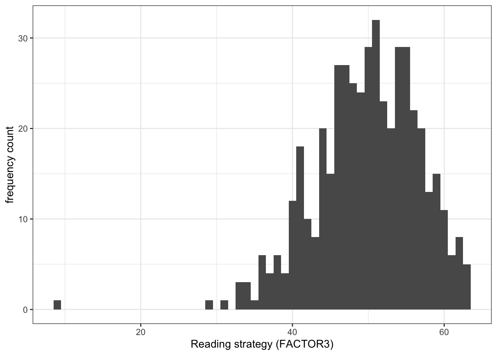
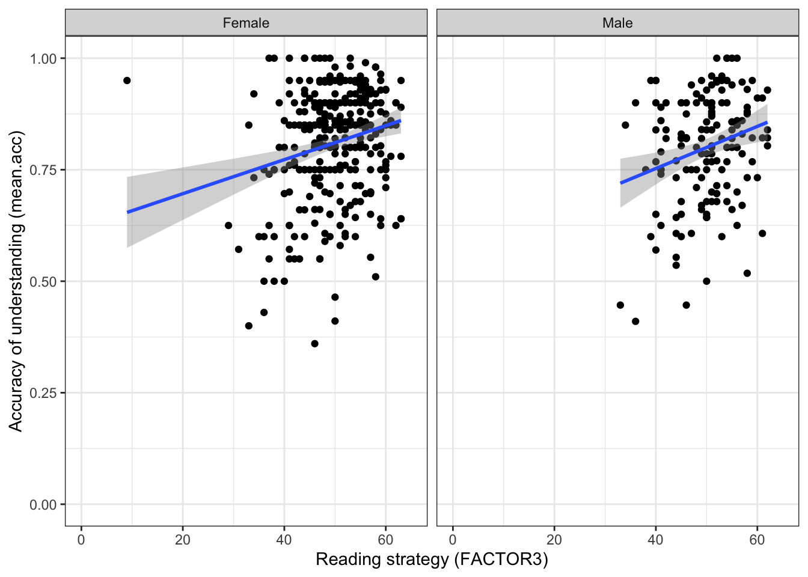
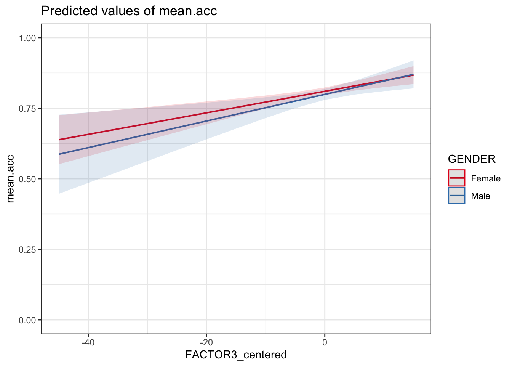

download.file("https://github.com/lu-psy-r/statistics_for_psychologists/blob/main/PSYC122/data/week19/all.data.csv?raw=true", destfile = "all.data.csv")8. Week 19 – Linear models – interactions
Written by Rob Davies
Tip
- Here is a link to the sign-in page for R-Studio Server
Week 19: Introduction
Welcome to your overview of our work together in PSYC122 Week 19.
TipThe real challenge in psychological science
- We are working together through four classes in weeks 16-19.
- These classes are designed to enable you to revise and put into practice some of the key ideas and skills you have been developing in the first year research methods modules PSYC121, PSYC123 and PSYC124.
- We have been doing this in the context of a live research project with potential real world impacts: the Clearly Understood project.
In the week 19 class, we will face the real challenge in psychological science, in the context of the theory, methods, and data of the Clearly Understood project. This challenge results from the facts that:
- People vary
- Effects vary
- Results vary
- Because the effects of interventions, treatments or experimental manipulations can be expected to vary,
- We must build the ability to investigate how those effects vary.
We will locate this ability in the capacity to work with interaction effects using the tools you have already been learning to apply within the linear model approach to analysis.
Tip
Our aim in these classes is to contribute new findings from the data we collect together.
- That time is now.
We will be working now with a large dataset that incorporates the responses from PSYC122 students.
Our learning goals
In Week 19, we aim to extend your skills in analyzing and in visualizing psychological data.
We will use linear models to estimate the association between predictors and outcomes in order to answer our research questions.
Tip
What is new here is that we will examine how the effects that interest us can be different in different groups of people, in different contexts, or for different values of a third variable
- If Psychologists think that the shape or size of an effect is different in different groups of people, or in different contexts, or for different values of a third variable (a moderator)
- Then typically we are thinking about an interaction effect.
When we work with linear models, as you have seen, we usually need to report:
- information about the model we specify, identifying all predictors;
- our evaluation of whether the effects of one or more predictors are significant;
- model fit statistics (
F, R-squared) as well as coefficient estimates; - and descriptions of the impact of predictors.
Usually, in describing the impacts of predictors, we are required to communicate:
- the direction of the effect – do values of the outcome variable increase or decrease given increasing values of the predictor?
- the size of the effect – how much do values of the outcome variable increase or decrease given increasing values of the predictor?
Tip
In examining interactions, we now have to consider how we should analyse, visualize and talk about how effects may vary:
- Is the shape or size of an effect different in different groups of people, in different contexts, or for different values of a third variable (a moderator)?
We answer questions like these by building linear models that include interaction effects.
Lectures
Tip
Before you go on to the activities in Section 5, watch the lectures: Week 19: Linear models – interactions and variation in effects
The lecture for this week is presented in four short parts. You can view video recordings of the lectures using Panopto, by clicking on the video images shown following.
- Anybody who has the link should be able to view the video.
- Introduction (9 minutes): Overview of the classes; introduction to key ideas – the real challenge in psychological science (people vary, effects vary, results vary) – variation, uncertainty, and working with the limits of samples.
- The Clearly Understood project – questions and analyses (11 minutes): Critical thinking – what effects can vary, how can effects vary, theoretical reasons motivating why effects might vary.
- Coding models with interactions (19 minutes): Revision on linear models as methods to predict outcomes; coding linear models with multiple predictors; models that do or do not include interactions; identifying the key information in the results from models including interactions; and making sense of what we see.
- Interactions between numeric variables and factors (13 minutes): Working with factors, the difference between numeric variables and factors, as predictors in linear models; the effects of factors in linear models; coding, plotting, interpreting and evaluating the effects of interactions between numeric variables and factors. Summary of key lessons.
Tip
The slides presented in the videos can be downloaded as a web page.
- The slides exactly as presented (13 MB).
You can download the web page .html file and click on it to open it in any browser (e.g., Chrome, Edge or Safari). The slide images are high quality and there are a lot of them, so the file is quite big; it may take a few seconds to download.
Tip
To work with our lecture recordings:
- Watch the video parts right through.
- Use the printable versions of the slides to make notes.
- Try out the coding exercises in the how-to guide and the activity tasks or questions (Section 5) to learn how to construct visualizations and do analyses.
The lectures have four main areas of focus
1. The real challenge in psychological science
We look at a – maybe the real challenge in psychological science – as we attempt to build a scientific understanding of what people think and do, and why they do it. We connect (1.) the fact that psychological and social processes show variability to (2.) the uncertainties we face when we try to draw insights from limited sample evidence.
Tip
What makes psychological science challenging:
- People vary
- Effects
- Results vary
2. Critical thinking
We have been working on answers to research questions in the context of the Clearly Understood project on the comprehension of health information.
- What person attributes predict success in understanding?
- Can people accurately evaluate whether they correctly understand written health information?
So far, we have been looking at the impact (on understanding) of variation between individuals in attributes like vocabulary knowledge.
Now, we need to consider the fact that the effect of one variable (a predictor like vocabulary knowledge) could itself vary.
Tip
We can develop our critical thinking skills by considering:
- What effects can vary
- How effects can vary
We discuss the kinds of theoretical assumptions that may lead Psychologists to hypothesize interaction effects.
3. Coding models with interactions
We build on our understanding that linear models can be used to predict variation in psychological outcomes like observations of behaviours or scores on tests of person attributes. We build on our development of skills in coding linear models with multiple predictors to examine how we should code models incorporating interaction effects.
Tip
We build skills by looking at:
- The kind of coding we should use;
- The key information in results, where to find it, and how to interpret it;
- And the different ways in which we can present and interpret interactions.
4. Interactions between numeric variables and factors
The effect on an outcome that is due to a numeric variable (like reading strategy) can differ depending on variation in another numeric variable (like vocabulary knowledge). But an effect can also differ depending on differences between groups or contexts. We often test or estimate the effects of differences between groups or contexts using categorical variables – factors. This means we need to consolidate what we understand about working with factors in linear models. And then we need to build on this understanding by looking at interactions between numeric variables and factors.
Tip
We will learn about:
- How we code for the effects of factors in linear models;
- How we identify and interpret key information about factor effects;
- How we code models to estimate the effects of interactions between numeric variables and factors.
We end the class by looking at the language and style of reporting results when we present our findings from linear model including an interaction effect.
Reading: Links to other classes
We do not provide further reading for this class but you will find it helpful to revise some of the key ideas you have been learning about in PSYC122 and in other modules.
- The lectures in PSYC122 on linear models.
- The lectures in PSYC123 on: the scientific method; reliability and validity; experimental design; and hypothesis testing.
Pre-lab activities
Pre-lab activity 1
In weeks 16-19, we have been working together on a research project to investigate how people vary in their response to written health information or health advice.
Completing the project involves collecting responses from PSYC122 students: you.
To enter your responses, we invite you to complete a short survey.
Complete the survey by clicking on the link here
If you want more information about the project, we invite you to read the pre-registered research plan for the PSYC122 health advice research project.
Lab activities
Introduction
We will do our practical lab work in the context of the Clearly Understood project.
- Our focus is on what makes it easy or difficult for people to understand written health information.
Important
In Week 19, we aim to answer the research questions:
- What person attributes predict success in understanding health information?
- How can the effects of person attributes vary, in different groups of people, or for different values of a third variable (a moderator)?
PSYC122 students contributed their responses to a survey we have been using to collect data to find answers to these questions.
In our practical work, we will be examining a dataset combining:
- Data from two studies of the response of adults from a UK national sample to written health information
study-one-general-participants.csvstudy-two-general-participants.csv
- Data from PSYC122 students.
These data have been joined together to create a dataset of over 400 observations. This is because it often requires a lot of evidence to be able to draw precise or accurate conclusions about potential interaction effects.
Get ready
Download the data
Click on the link: 122_week19_for_students.zip to download the data files folder. Then upload the contents to the new folder you created in RStudio Server.
The downloadable .zip folder includes the data file:
all.data.csv
and the R Markdown .Rmd:
PSYC122-w19-how-to.Rmd
If you can’t upload these files to the server – this affects some students – you can use some code to get R to do it for you: uncover the code box below to reveal the code to do this.
TipCode
- You can use the code below to directly download the file you need in this lab activity to the server.
- Remember that you can copy the code to your clipboard by clicking on the ‘clipboard’ in the top right corner.
Get the all.data.csv data:
If you need to get the how-to guide, you can do that by clicking on the link in the box below.
- Warning: if you click on the link, the how-to guide might be shown to you (in some browsers) as a new webpage tab.
TipLink to the how-to guide
Get the PSYC122-w19-how-to.Rmd how-to guide
Click on the link: PSYC122-w19-how-to.Rmd to download the PSYC122-w19-how-to.Rmd guide.
Check: What is in the data file?
Each of the data files we will work with has a similar structure, as you can see in this extract.
| participant_ID | mean.acc | mean.self | study | AGE | SHIPLEY | HLVA | FACTOR3 | GENDER | EDUCATION | ETHNICITY |
|---|---|---|---|---|---|---|---|---|---|---|
| studyone.10 | 0.8500000 | 7.280000 | study.one | 25 | 33 | 7 | 60 | Female | Higher | White |
| studytwo.1 | 0.4107143 | 6.071429 | study.two | 26 | 27 | 6 | 50 | Female | Higher | Asian |
| R_8jSZdRgu4oq4QyD | 0.6500000 | 5.400000 | PSYC122 | 18 | 37 | 10 | 50 | Male | Further | White |
You can use the scroll bar at the bottom of the data window to view different columns.
You can see the columns:
participant_IDparticipant code;mean.accaverage accuracy of response to questions testing understanding of health guidance (varies between 0-1);mean.selfaverage self-rated accuracy of understanding of health guidance (varies between 1-9);studyvariable coding for what study the data were collected in;AGEage in years;HLVAhealth literacy test score (varies between 1-16);SHIPLEYvocabulary knowledge test score (varies between 0-40);FACTOR3reading strategy survey score (varies between 0-80);GENDERgender code (here,Female, Male);EDUCATIONeducation level code (here,Further, Higher);ETHNICITYethnicity (Office National Statistics categories) code (here,Asian, Black, Mixed, White, Other).
Lab activity 1: Work with the How-to guide
The how-to guide comprises an .Rmd file:
PSYC122-w19-how-to.Rmd
It is full of advice and example code.
The code in the how-to guide was written to work with:
all.data.csv
Tip
We show you how to do everything you need to do in the lab activity (Section 5.4, shown following) in the how-to guide.
- Start by looking at the
how-toguide to understand what steps you need to follow in the lab activity.
We will take things step-by-step.
We split .Rmd scripts by steps, tasks and questions:
- different steps for different phases of the analysis workflow;
- different tasks for different things you need to do;
- different questions to examine different ideas or coding challenges.
Tip
- Make sure you start at the top of the
.Rmdfile and work in order through each task. - Complete each task before you move on to the next task.
In the activity Section 5.4, we are going to work through a sequence of steps and tasks that mirrors the sequence you find in the how-to guide.
- There is a little bit of variation, comparing the later steps in the
how-toguide and the steps in Section 5.4, but that variation is designed to help you with your learning.
Tip
- Notice that we are gradually building up our skills: consolidating what we know; revising important learning; and extending ourselves to acquire new skills.
Step 1: Set-up
- Empty the R environment – using
rm(list=ls()) - Load relevant libraries – using
library()
Step 2: Load the data
- Read in the data file – using
read_csv() - Inspect the data – using
summary()
Step 3: Work with different kinds of variables
- Visualize the distribution of a numeric variable – using
geom_histogram() - Identify the kind or class of a variable – using functions like
is.factor()oris.numeric()oris.character()– theis._()family of functions - Change the kind or class of a variable – using functions like
as.factor()oras.numeric()oras.character()– theas._()family of functions
Step 4: Draw plots to examine associations between variables and to visualize interactions
- Draw scatterplots to compare the potential association between two variables – using
geom_point() - Use
facet_wrap()to examine or to show the association may vary for different values of a third variable (numeric or factor) - Use
cut_number()to split a dataset, in rows (observations), by values of a numeric variable
Step 5: Use linear models with multiple predictors, to estimate the effects of factors as well as numeric variables
- Fit a linear model including numeric variables as predictors
- Fit a linear model including a numeric variable and a factor as predictors
Step 6: Use linear models with multiple predictors, including interaction effects
- Center numeric variables before using them as predictors
- Specify models to include interaction effects: interactions between two numeric predictor variables – using the
*operator - Specify models to include interaction effects: interactions between a numeric predictor variable and a factor predictor variable – using the
*operator
Tip
If you are unsure about what you need to do, look at the advice in PSYC122-w19-how-to.Rmd on how to do the tasks, with examples on how to write the code.
You will see that you can match a task in the activity Section 5.4 to the same task in the how-to guide.
- The
how-toshows you what function you need and how you should write the function code.
This process of adapting demonstration code is a process critical to data literacy and to effective problem solving in modern psychological science.
Warning
Don’t forget: You will need to change the names of the variables to complete the tasks in Section 5.4.
Lab activity 2
OK: now let’s do it!
In the following, we will guide you through the tasks and questions step by step.
Tip
- We will not at first give you the answers to questions about the data or about the results of analyses.
- An answers version of the workbook will be provided after the last lab session (check the answers then in Section 6) so that you can check whether your independent work has been correct.
Questions
Warning
Students have told us that it would be helpful to your learning if we reduce the information in the hints we provide you. We have done this in Week 19.
The motivation for doing this is:
- It will require you to do more active thinking to complete tasks or answer questions;
- Thus, you can check to see how your learning is developing – can you do the tasks, given what you know now?
- Plus, psychological research shows that active thinking is better for understanding and for learning.
Where we do give you hints, we will sometimes replace the correct bit of code with a place-holder: ...
- Your task will therefore be to replace the place-holder
...with the correct bit of code or the correct data-set or variable name.
Step 1: Set-up
To begin, we set up our environment in R.
Task 1 – Run code to empty the R environment
TipCode
rm(list=ls())Task 2 – Run code to load relevant libraries
Notice that in Week 19, we need to work with the libraries ggeffects and tidyverse. Use the library() function to make these libraries available to you.
TipCode
library("ggeffects")
library("sjPlot")
library("tidyverse")Step 2: Load the data
Task 3 – Read in the data file we will be using
The data files is called:
all-data.csv
Use the read_csv() function to read the data files into R:
TipCode
all.data <- read_csv("all.data.csv") Rows: 478 Columns: 11
── Column specification ────────────────────────────────────────────────────────
Delimiter: ","
chr (5): participant_ID, study, GENDER, EDUCATION, ETHNICITY
dbl (6): mean.acc, mean.self, AGE, SHIPLEY, HLVA, FACTOR3
ℹ Use `spec()` to retrieve the full column specification for this data.
ℹ Specify the column types or set `show_col_types = FALSE` to quiet this message.When you read the data files in, give the data object you create a meaningful name e.g. all.data.
Task 4 – Inspect the data file
Use the summary() function to take a look at the dataset.
TipCode
summary(all.data) participant_ID mean.acc mean.self study
Length:478 Min. :0.3600 Min. :2.250 Length:478
Class :character 1st Qu.:0.7500 1st Qu.:6.200 Class :character
Mode :character Median :0.8300 Median :7.200 Mode :character
Mean :0.8066 Mean :6.967
3rd Qu.:0.9000 3rd Qu.:7.910
Max. :1.0000 Max. :9.000
AGE SHIPLEY HLVA FACTOR3
Min. :18.00 Min. :19.00 Min. : 2.000 Min. : 9.00
1st Qu.:21.00 1st Qu.:31.00 1st Qu.: 7.000 1st Qu.:46.00
Median :29.00 Median :35.00 Median : 9.000 Median :50.00
Mean :32.85 Mean :34.19 Mean : 8.929 Mean :49.84
3rd Qu.:43.00 3rd Qu.:38.00 3rd Qu.:10.000 3rd Qu.:55.00
Max. :76.00 Max. :40.00 Max. :14.000 Max. :63.00
GENDER EDUCATION ETHNICITY
Length:478 Length:478 Length:478
Class :character Class :character Class :character
Mode :character Mode :character Mode :character
Step 3: Work with different kinds of variables
It is an important skill in psychological data analysis to be able to:
(1.) identify the different kinds of data variables we are working with; (2.) adapt our methods depending on differences in kind (variable Class or type).
We learn about these skills, next, in exercises that combine some revision with some new moves.
TipRevise: consolidate what you know
Task 5 – Use summaries or plots to examine variables
Questions: Task 5
Q.1. What is the median of the
FACTOR3variable in the dataset?
Q.2. Draw a histogram of the
FACTOR3distribution.
ggplot(data = all.data, aes(x = FACTOR3)) +
geom_histogram(binwidth = 1) +
theme_bw() +
labs(x = "Reading strategy (FACTOR3)", y = "frequency count")
Q.3. Examine the reading strategy (
FACTOR3) scores distribution: what does it tell you about the variation in the reading strategies of the participants in the sample?
TipExtend: make some new moves
We can tell from the summary and the distribution that the FACTOR3 variable consists of numbers.
Another way to identify the kind or class of a variable is by using a check question:
is.factor(all.data$FACTOR3)[1] FALSEis.numeric(all.data$FACTOR3)[1] TRUEThe is._() family of functions act like identity checks: what is this variable? These functions work like questions with TRUE or FALSE answers.
- Q. Is this variable a factor? A.
[TRUE]or[FALSE] - Q. Is this variable numeric? A.
[TRUE]or `[FALSE]
Task 6 – Identify (and change) what kind of variable – numeric or factor – a variable is
Hint: Task 6 – The
is._()functions are available to ask what kind a variable is Hint: Task 6 – Theas._()functions can be used to change variable types
Q.4. What kind of variable is
GENDER?
Q.5. What do the
is._()functions tell us?
Q.6. If you look at the
summary()results, what does it tell you theClassofGENDERis?
Q.7. How do you change the class or type of the variable
GENDER? Change the variable’s type (Class) into a factor.
Q.8. What does a
summary()tell us about the self-reportedGENDERof participants in theall.datasample?
Gender identity representation in survey samples
We note, here, that in addition to the numbers shown in the summary, six participants in the survey data entered the Non-Binary identification response option, and two participants entered the Prefer not to say option, in response to the gender identification question in the survey.
In the present exercises, we are looking at the way in which the effect on outcomes of variables – like variation in health literacy (HLVA) or reading strategy (FACTOR3) score – vary for different values of a categorical variable (like GENDER). These kinds of interactions become more complicated to analyse where there are more than two categories or levels in a factor, especially when the numbers of participants in one or more categories or levels is relatively small.
We think it is important to ensure representation of the responses and experiences of the full range of diversity among the populations we study. In future work, we hope to have collected sufficient numbers of observations from groups of participants like those entering responses like Non-Binary or Prefer not to say in order to be able to incorporate all possible between-group comparisons in analyses.
For now, we enter this explanation as a promise to to examine more representative samples in future work. Here is a link, for those who are interested, to reports of analyses of data from a survey conducted by a leading research organization (Pew Research Center). Follow the link to “Methodology” for information on how this organization exemplify good practice in obtaining representative samples.
https://www.pewresearch.org/social-trends/2025/05/29/the-experiences-of-lgbtq-americans-today/
Step 4: Now draw plots to examine associations between variables and to visualize interactions
Here, we are going to build on previous work to use plots to:
(1.) Examine the associations between pairs of variables, an outcome and a predictor (2.) Examine how the association between two variables can be different for different levels of a third variable
Scenario (2.) comes up if we are thinking about or working with interaction effects.
TipConsolidation: practice to strengthen skills
Task 7 – Create a scatterplot to examine the association between two numeric variables
Hint: Task 7 – We are working with
geom_point()and you need x and y aesthetic mappings.
Here, we can look at the potential association between variation in reading strategy (using the FACTOR3 measure) and accuracy of understanding of health information (mean.acc).
Code and run a chunk of code to make the plot.
TipCode
ggplot(data = all.data, aes(x = FACTOR3, y = mean.acc)) +
geom_point() +
theme_bw() +
labs(y = "Accuracy of understanding (mean.acc)",
x = "Reading strategy (FACTOR3)") +
xlim(0, 65) + ylim(0, 1)
This plot shows:
- the possible association between x-axis variable
FACTOR3and y-axis variablemean.acc.
The plot code moves through the following steps:
ggplot(...)make a plot;ggplot(data = all.data, ...)with theall.datadataset;ggplot(...aes(x = FACTOR3, y = mean.acc))using two aesthetic mappings
x = FACTOR3mapFACTOR3values to x-axis (horizontal, left to right) positions;y = mean.accmapmean.accvalues to y-axis (vertical, bottom to top) positions;
geom_point()show the mappings as points.theme_bw()changes the theme to a white background.labs(y = "Accuracy of understanding (mean.acc)", x = "Reading strategy (FACTOR3)")changes axis labels.xlim(0, 65) + ylim(0, 1)changes axis limits.
Q.9. What do you notice about the distribution of
mean.accscores at increasing values of reading strategy (FACTOR3) scores?
TipIntroduce: make some new moves
In the next sequence of exercises, we are going to take the all.data dataset and split it into parts (sub-sets) in different ways.
- We split the dataset vertically, into different sets of rows or observations.
Why are we learning how to do this?
The capacity to do this kind of split-analyse operation is extremely useful.
We are going to do this so that we can examine how the effects of interest to us (here, associations) can vary between different groups of people.
Remember, observations about different people are on different rows in all.data.
- We are going to focus on an association between two column variables (
mean.acc,FACTOR3). - We are going to identify different groups (sub-sets) of observations using values on a third variable.
Task 8 – Create a scatterplot to examine the association between two numeric variables, showing how the association is different for different values of a third variable
Hint: Task 8 – We are working with
geom_point()again.
Hint: Task 8 – We can show how the association between two variables (
mean.acc,FACTOR3) is different for different values of a third, categorical (factor), variable (GENDER) by splitting the plot so that we see the association for different levels ofGENDER.
Here, we are splitting the dataset into:
- observation data from people with just
GENDERlevelFemale - observation data from people with just
GENDERlevelMale
and we are then producing a different scatterplot for each sub-set of data produced by the split.
Run the following chunk of code to make the plot.
TipCode
ggplot(data = all.data, aes(x = FACTOR3, y = mean.acc)) +
geom_point() +
geom_smooth(method = 'lm') +
theme_bw() +
labs(y = "Accuracy of understanding (mean.acc)",
x = "Reading strategy (FACTOR3)") +
xlim(0, 65) + ylim(0, 1) +
facet_wrap(~ GENDER)`geom_smooth()` using formula = 'y ~ x'
This plot shows:
- the possible association between x-axis variable
FACTOR3and y-axis variablemean.acc - for different groups of people – people with self-reported
GENDERresponses ofFemaleorMale.
The plot code moves through steps we have seen before. What is new here is this bit:
facet_wrap(~ GENDER)
The function facet_wrap() splits the dataset into sub-sets (different parts): different sets of rows, where different sets are defined according to different values of the variable identified inside the brackets (~ GENDER).
Here, we are asking for different scatterplots for the dataset split by whether participants are coded as Female or Male for this survey.
You can see a general guide to the function here:
Now use the plots to answer the following question.
Q.10. What do you notice about the distribution of
mean.accscores at increasing values of reading strategy (FACTOR3) scores, for different sub-sets of the data: for people withFemaleorMaleGENDERcoding?
Hint: Task 8 – We can show how the association between two variables (
mean.acc,FACTOR3) is different for different values of a third numeric variable (HLVA) by splitting the dataset
Here, we are first creating a new variable to code for (distinguish between) different sub-sets of observations (different rows in the dataset) based on HLVA scores, and then second drawing different plots based on different subsets.
We do this in two steps, as follows.
First, run a chunk of code to divide (cut) the dataset into parts.
Tip
all.data$HLVA_splits <- cut_number(all.data$HLVA, 3)The code works bit-by-bit like this:
all.data$HLVA_splits <-create a new variable,HLVA_splitsand add it to the datasetall.datagiven the work done by the bit of code on the right of the arrow<-.
On the right of the arrow <- …
cut_number(all.data$HLVA, 3)uses thecut_number(...)to divide the dataset observations into three sets based on the values in theall.data$HLVAvariable named inside the brackets.
The function works by ordering all the observations (the rows) in the dataset according to the values in the named variable all.data$HLVA, then splitting the dataset (here, into three sub-sets) based on values in that named variable.
Given this code, we are going to get three sub-sets of the data, observations corresponding to (1.) low (2.) mid or (3.) high HLVA values.
- We split the data into data about people with:
(1.) low HLVA values, scores between 2-8 on the HLVA test; (2.) mid HLVA values, scores between 8-10 on the HLVA test; (3.) high HLVA values, scores between 10-14 on the HLVA test.
You can see a guide to the key function here:
https://ggplot2.tidyverse.org/reference/cut_interval.html
Note that where we split the data (what ranges of scores we use) will depend on the sample.
Second, we draw a plot to examine if the association between two variables (mean.acc, HLVA) is different for different values of a third variable (SHIPLEY) by splitting the data
Run the following chunk of code to make the plot.
TipCode
ggplot(data = all.data, aes(x = FACTOR3, y = mean.acc)) +
geom_point() +
geom_smooth(method = 'lm') +
facet_wrap(~ HLVA_splits, nrow = 1, labeller = label_both) +
labs(y = "Accuracy of understanding (mean.acc)",
x = "Reading strategy (FACTOR3)") +
theme_bw() `geom_smooth()` using formula = 'y ~ x'
The plot code moves through the scatterplot production steps we have seen before.
The bit that is new is here:
facet_wrap(~ HLVA_splits, nrow = 1, labeller = label_both) which is included to use the data split, constructed earlier.
This addition allows us to show:
- the nature of the association between two variables (
mean.acc,FACTOR3) - for different values of the third variable (
HLVA) - by splitting the data into three sub-sets according to
HLVAscore (2-8 low, 8-10 mid, 10-14 high).
Now use the plots to answer the following question.
Q.11. What do you notice about the distribution of
mean.accscores at increasing values of reading strategy (FACTOR3) scores, for different sub-sets of the data: for (1.) low (2.) mid (3.) highHLVAvalues?
Q.12. What do you think the values in the grey labels at the top of the facets (the plot panels) tell us?
Step 5: Use linear models with multiple predictors, to estimate the effects of factors as well as numeric variables
TipConsolidation: practice to strengthen skills
As we saw in weeks 17 and 18, we can use linear models to predict outcome variables.
- Linear models can include numeric variables (like
FACTOR3orHLVA) as predictors. - Linear models can also include categorical variables or factors (like
GENDERorEDUCATION) as predictors.
Task 9 – First, fit a linear model including just numeric variables as predictors
Hint: Task 9 – We use the
lm()function to fit a model withmean.accas the outcome andFACTOR3andHLVAas predictors.
Note that in this model:
FACTOR3is a measure of reading strategy – numeric scores correspond to a test of the relative effectiveness of the strategies participants use to read and understand written information;HLVAis a measure of health literacy – numeric scores correspond to a test of knowledge of health-related words.
TipCode
model <- lm(mean.acc ~ FACTOR3 + HLVA,
data = all.data)
summary(model)
Call:
lm(formula = mean.acc ~ FACTOR3 + HLVA, data = all.data)
Residuals:
Min 1Q Median 3Q Max
-0.38243 -0.06507 0.01136 0.07686 0.27637
Coefficients:
Estimate Std. Error t value Pr(>|t|)
(Intercept) 0.4956473 0.0403305 12.290 <2e-16 ***
FACTOR3 0.0023489 0.0007874 2.983 0.003 **
HLVA 0.0217126 0.0024504 8.861 <2e-16 ***
---
Signif. codes: 0 '***' 0.001 '**' 0.01 '*' 0.05 '.' 0.1 ' ' 1
Residual standard error: 0.1139 on 475 degrees of freedom
Multiple R-squared: 0.1834, Adjusted R-squared: 0.18
F-statistic: 53.35 on 2 and 475 DF, p-value: < 2.2e-16If you look at the model summary you can answer the following questions.
Q.13. What is the estimate for the coefficient of the effect of the predictor,
FACTOR3(reading strategy)?
Q.14. Is the effect significant?
Q.15. What are the values for t and p for the significance test for the estimated coefficient of the effect of
HLVA(health literacy)?
TipDo you know how to intepret numbers like
<2e-16?
If you are unsure you can find out about scientific notation here:
https://www.calculatorsoup.com/calculators/math/scientific-notation-converter.php
Q.16. What do you conclude are the effects of the
FACTOR3(reading strategy) andHLVA(health literacy) variables, as predictors of outcomemean.acc(accuracy of understanding of health information)?
Task 10 – Second, fit a linear model including a numeric variable and a factor as predictors
Hint: Task 10 – We use the
lm()function to fit a model withmean.accas the outcome andFACTOR3andGENDERas predictors.
Note that in this model:
FACTOR3is a measure of reading strategy – numeric scores correspond to a test of strategy awarenessGENDERis a self-report measure of gender identity
Tip
model <- lm(mean.acc ~ FACTOR3 + GENDER,
data = all.data)
summary(model)
Call:
lm(formula = mean.acc ~ FACTOR3 + GENDER, data = all.data)
Residuals:
Min 1Q Median 3Q Max
-0.43448 -0.06809 0.02190 0.09104 0.30596
Coefficients:
Estimate Std. Error t value Pr(>|t|)
(Intercept) 0.6074530 0.0415532 14.619 < 2e-16 ***
FACTOR3 0.0040658 0.0008237 4.936 1.1e-06 ***
GENDERMale -0.0108184 0.0120051 -0.901 0.368
---
Signif. codes: 0 '***' 0.001 '**' 0.01 '*' 0.05 '.' 0.1 ' ' 1
Residual standard error: 0.1228 on 475 degrees of freedom
Multiple R-squared: 0.05007, Adjusted R-squared: 0.04607
F-statistic: 12.52 on 2 and 475 DF, p-value: 5.036e-06If you look at the model summary you can answer the following questions.
Q.17. What is the estimate for the coefficient of the effect of the predictor,
FACTOR3(strategy)?
Q.18. Is the effect significant?
Q.19. What are the values for t and p for the significance test for the estimated coefficient of the effect of
GENDER(level,Malecompared toFemale)?
Q.20. Is the effect of
GENDERsignificant?
Hint: Task 10 – How do we know how to interpret estimates for the effects of factors? We discussed how R deals with factors in week 18, and discuss factors, and the effects of factors, in the week 19 lecture.
Q.21. How should we interpret the coefficient estimate for the effect of
GENDER?
Q.22. What do you conclude are the effects of the
FACTOR3(strategy) andGENDER(Femalecompared toMale) variables, as predictors of outcomemean.acc(accuracy of understanding of health information)?
Step 6: Use linear models with multiple predictors, including interaction effects
TipIntroduce: make some new moves
As we saw through Task 8, it is possible that:
- the association between two variables (
mean.acc,FACTOR3) can be different for different values of a third categorical (factor) variable (GENDER); - the association between two variables (
mean.acc,FACTOR3) can be different for different values of a third variable (HLVA)
While we can examine these possibilities using visualizations, we often need to conduct statistical analyses to test interaction effects, or the ways in which the association between two variables can be different for different levels of a third variable.
We can extend linear models to include terms that allow us to test or to estimate interaction effects.
Task 11 – Center numeric variables before using them as predictors
Hint: Task 11
When we include numeric variables (e.g., FACTOR3, HLVA, SHIPLEY) in linear models, it can cause problems of interpretation or of estimation if we include the variables as they first come to us in datasets (as raw variables).
- It often helps our analyses to center variables on their means.
- Centering a variable means calculating its mean, and then subtracting that mean from every value in the variable column.
For example, to center values of the HLVA variable, we create a new column data$HLVA_centered by first calculating the mean of the data$HLVA variable, and then subtracting that mean from every row value in data$HLVA.
TipCode
all.data$HLVA_centered <- all.data$HLVA - mean(all.data$HLVA, na.rm = TRUE)Q.23. Can you check what is going on when we center variables?
- Q.23. Hint: You can see what is happening when you run this code by first calculating the mean for
HLVA
TipCode
mean(all.data$HLVA, na.rm = TRUE)[1] 8.92887then looking at column values in the new HLVA_centered column, compared to the original HLVA column:
TipCode
all.data %>%
select(HLVA_centered, HLVA) %>%
print(n = 20)# A tibble: 478 × 2
HLVA_centered HLVA
<dbl> <dbl>
1 -1.93 7
2 -0.929 8
3 2.07 11
4 4.07 13
5 0.0711 9
6 -2.93 6
7 -1.93 7
8 -0.929 8
9 1.07 10
10 4.07 13
11 1.07 10
12 2.07 11
13 -0.929 8
14 1.07 10
15 1.07 10
16 1.07 10
17 3.07 12
18 1.07 10
19 -1.93 7
20 -2.93 6
# ℹ 458 more rowsWhat is the difference between the HLVA and HLVA_centered columns?
Q.24. Can you center the variable
FACTOR3?
Q.25. Can you center the variable
SHIPLEY?
Why are we learning how to do this?
It is common in data analysis to want to transform variables before using them in analyses.
- Here, we are transforming predictor variables by centering them on their mean values.
The practical reason for doing this transformation now is because if we use uncentered (raw) numeric variables as predictors in linear models that involve interactions the model can find it difficult to distinguish between the effects of those predictors and the effect of their interaction.
Task 12 – Specify models to include interaction effects: interactions between two numeric predictor variables
Hint: Task 12
We use lm() to specify models, as we have been doing.
- What changes is that we now use the
*operator in our model code to specify interaction effects.
For example, let’s suppose that we want to examine the possibility that the effect of reading strategy (FACTOR3) on accuracy understanding (mean.acc) is different for different values of health literacy (HLVA).
- Here, we are considering the possibility that the association between reading strategy (
FACTOR3) and accuracy of understanding (mean.acc) varies. - We are considering the possibility that the the association between reading strategy (
FACTOR3) and accuracy of understanding (mean.acc) is different for different groups of people. - We are considering the possibility that the effect of reading strategy (
FACTOR3) on accuracy of understanding (mean.acc) is different for people who differ, also, in health literacy (HLVA).
In examining the possibility that the effect of reading strategy (FACTOR3) on accuracy of understanding (mean.acc) is different for different values of health literacy (HLVA), we are examining a possible interaction between the effects of reading strategy (FACTOR3) and health literacy (HLVA).
TipLet’s go through this step-by-step
First, consider: if we ignored the possibility of an interaction, we would fit a model with just the predictors: reading strategy (FACTOR3) and health literacy (HLVA).
We can fit the same model that we fit before (for Task 9).
- We vary the code a little, by using the centered variables we have just created:
TipCode
# -- center the variable if it has not been already
all.data$FACTOR3_centered <- all.data$FACTOR3 - mean(all.data$FACTOR3, na.rm = TRUE)
# -- fit the model
model <- lm(mean.acc ~ FACTOR3_centered + HLVA_centered,
data = all.data)
# -- get the model summary
summary(model)
Call:
lm(formula = mean.acc ~ FACTOR3_centered + HLVA_centered, data = all.data)
Residuals:
Min 1Q Median 3Q Max
-0.38243 -0.06507 0.01136 0.07686 0.27637
Coefficients:
Estimate Std. Error t value Pr(>|t|)
(Intercept) 0.8065870 0.0052095 154.830 <2e-16 ***
FACTOR3_centered 0.0023489 0.0007874 2.983 0.003 **
HLVA_centered 0.0217126 0.0024504 8.861 <2e-16 ***
---
Signif. codes: 0 '***' 0.001 '**' 0.01 '*' 0.05 '.' 0.1 ' ' 1
Residual standard error: 0.1139 on 475 degrees of freedom
Multiple R-squared: 0.1834, Adjusted R-squared: 0.18
F-statistic: 53.35 on 2 and 475 DF, p-value: < 2.2e-16Q.26. Can you compare the summary of results for this model with the model, using the same (but not centered) predictors, that you fitted for Task 9 – compare the estimates, what do you see?
Second, now consider: we aim to test or estimate the interactions between the effects of reading strategy (FACTOR3_centered) and health literacy (HLVA_centered).
- We vary the code a little, again, this time by separating the predictors by
*not by+:
TipCode
model <- lm(mean.acc ~ FACTOR3_centered*HLVA_centered,
data = all.data)
summary(model)
Call:
lm(formula = mean.acc ~ FACTOR3_centered * HLVA_centered, data = all.data)
Residuals:
Min 1Q Median 3Q Max
-0.36935 -0.06267 0.01487 0.07646 0.32573
Coefficients:
Estimate Std. Error t value Pr(>|t|)
(Intercept) 0.8086743 0.0053507 151.133 < 2e-16 ***
FACTOR3_centered 0.0022694 0.0007874 2.882 0.00413 **
HLVA_centered 0.0213896 0.0024537 8.717 < 2e-16 ***
FACTOR3_centered:HLVA_centered -0.0005713 0.0003452 -1.655 0.09857 .
---
Signif. codes: 0 '***' 0.001 '**' 0.01 '*' 0.05 '.' 0.1 ' ' 1
Residual standard error: 0.1137 on 474 degrees of freedom
Multiple R-squared: 0.1881, Adjusted R-squared: 0.183
F-statistic: 36.61 on 3 and 474 DF, p-value: < 2.2e-16Q.27. Can you compare the summary of results for this model with the results for the previous model (which uses the same predictors but without an interaction)?
- What do you see?
What are we learning here?
The * symbol (the * operator) is used here to code for a model including the effects of the two variables separated by the symbol, here, as well as the effect of the interaction between these two variables.
Task 13 – Plot model predictions to help with interpretation of interaction effects
Hint: Task 13
How do we interpret interactions?
- It helps to plot model predictions, given the effects estimates that we derive from our sample using the linear model.
We can do this in a two-step sequence, similar to the sequence we trialled through weeks 17 and 18:
- First fit the model
TipCode
# -- first fit the model
model <- lm(mean.acc ~ FACTOR3_centered*HLVA_centered,
data = all.data)- Second, use the model information to plot the predictions, given the effects
TipCode
# -- second use model information to make a plot to show model predictions
plot_model(model, type = "pred",
terms = c("FACTOR3_centered", "HLVA_centered")) +
theme_bw() +
ylim(0, 1)Scale for y is already present.
Adding another scale for y, which will replace the existing scale.
Q.28. Can you compare the summary of results for the model with the plot to develop an interpretation of the
FACTOR3_centered*HLVA_centeredinteraction?
- What do you see?
Task 14 – Specify models to include interaction effects: interactions between a numeric predictor variable and a factor predictor variable
Hint: Task 14 – We follow the same approach that we followed through Task 12.
Now consider: we aim to test or estimate the interactions between the effects of reading strategy (FACTOR3) and gender (GENDER).
- We can vary the code to change the predictor variables but the structure otherwise stays the same: how should we do this?
TipCode
model <- lm(mean.acc ~ FACTOR3_centered*GENDER,
data = all.data)
summary(model)
Call:
lm(formula = mean.acc ~ FACTOR3_centered * GENDER, data = all.data)
Residuals:
Min 1Q Median 3Q Max
-0.43542 -0.07087 0.02173 0.09156 0.29573
Coefficients:
Estimate Std. Error t value Pr(>|t|)
(Intercept) 0.8100751 0.0068412 118.412 < 2e-16 ***
FACTOR3_centered 0.0038150 0.0009700 3.933 9.64e-05 ***
GENDERMale -0.0109063 0.0120160 -0.908 0.365
FACTOR3_centered:GENDERMale 0.0009027 0.0018404 0.490 0.624
---
Signif. codes: 0 '***' 0.001 '**' 0.01 '*' 0.05 '.' 0.1 ' ' 1
Residual standard error: 0.1229 on 474 degrees of freedom
Multiple R-squared: 0.05055, Adjusted R-squared: 0.04454
F-statistic: 8.412 on 3 and 474 DF, p-value: 1.86e-05Q.29. Can you identify what effects are shown in the model summary?
What are we learning here?
Remember from week 18:
Categorical variables or factors and reference levels.
- If you have a categorical variable like
GENDERthen when you use it in an analysis, R will look at the different categories (calledlevels) e.g., here,Female, Male` and it will pick one level to be the reference or baseline level. - The reference is the the level against which other levels are compared.
- Here, the reference level is
Femalesimply because, unless you tell R otherwise, it picks the level with a category name that begins earlier in the alphabet as the reference level.
How do we interpret interactions?
- It helps to plot the effects estimates, given the model.
We can do this in a two-step sequence, similar to the sequence we trialled through weeks 17 and 18:
- First fit the model
- Second, use the model information to plot the predictions, given the effects
TipCode
# -- first fit the model
model <- lm(mean.acc ~ FACTOR3_centered*GENDER,
data = all.data)
# -- make plot
plot_model(model, type = "pred",
terms = c("FACTOR3_centered", "GENDER")) +
theme_bw() +
ylim(0, 1)Some of the focal terms are of type `character`. This may lead to
unexpected results. It is recommended to convert these variables to
factors before fitting the model.
The following variables are of type character: `GENDER`Scale for y is already present.
Adding another scale for y, which will replace the existing scale.
Q.30. Can you identify how the effects of reading strategy (
FACTOR3) and gender (GENDER) interact, given the model results summary and this plot?
You have now completed the Week 19 questions.
You have now extended your capacity to think critically about our data and our capacity to predict people and their behaviour.
Tip
- We have used PSYC122 students’ responses to examine the robustness of evidence for potential answers to our research questions.
- Examining the ways that effects can vary between groups, contexts or the values of a moderator is a key element in the process of building insights in psychological science.
Answers
When you have completed all of the lab content, you may want to check your answers with our completed version of the script for this week.
Tip
The .Rmd script containing all code and all answers for each task and each question will be made available after the final lab session has taken place.
We set out answers information on the Week 19 questions, below.
- We focus on the Lab activity 2 questions where we ask you to interpret something or say something.
- We do not show questions where we have given example or target code in the foregoing lab activity Section 5.4.
You can see all the code and all the answers in PSYC122-w19-workbook-answers.Rmd.
Answers
Online Q&A
You will find, below, a link to the video recording of the Week 19 online Q&A after it has been completed.